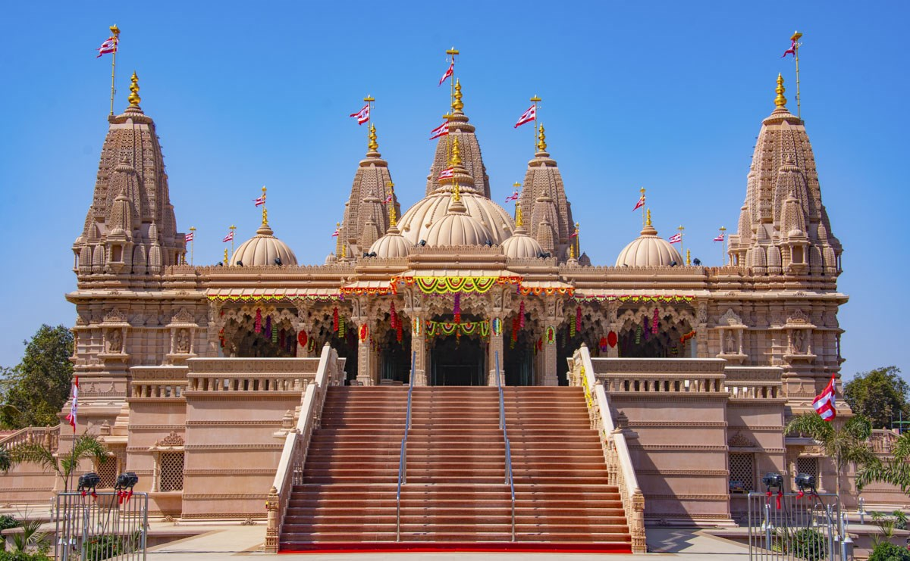
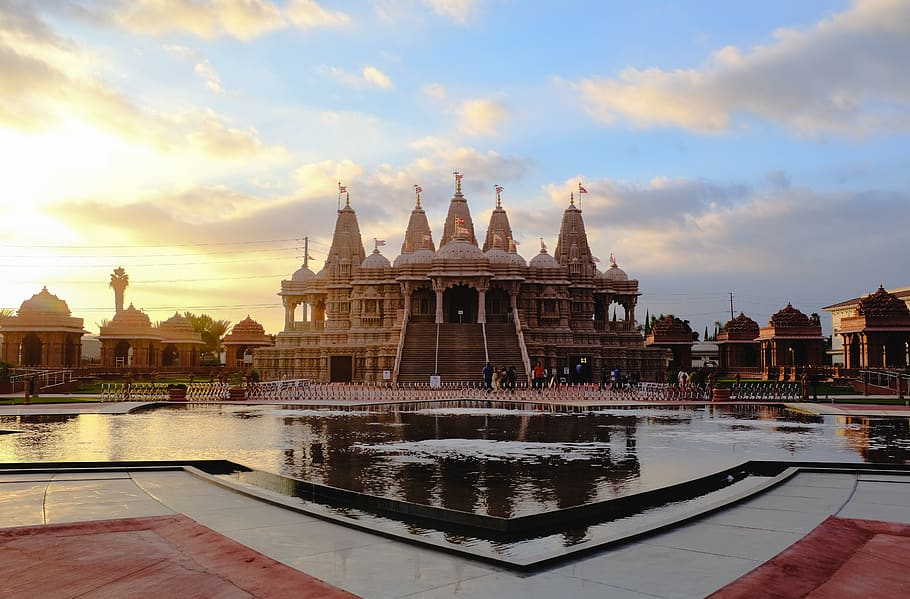

Swaminarayan Temple


Swaminarayan Temple
Swaminarayan (IAST: Svāmīnārāyaṇa; 3 April 1781 – 1 June 1830), also known as Sahajanand Swami, was a yogi and ascetic believed by followers to be a manifestation of Krishna[3][4][5] or the highest manifestation of Purushottama,[6][7] around whom the Swaminarayan Sampradaya developed.
n 1800, he was initiated into the Uddhava sampradaya by his guru, Swami Ramanand, and was given the name Sahajanand Swami. Despite opposition, in 1802, Ramanand handed over the leadership of the Uddhava Sampradaya to him before his death.
According to the Swaminarayan tradition, Sahajanand Swami became known as Swaminarayan, and the Uddhava Sampradaya became known as the Swaminarayan Sampradaya, after a gathering in which he taught the Swaminarayan Mantra to his followers.
He emphasized "moral, personal, and social betterment,"[9] and ahimsa.[10] He is also remembered within the sect for undertaking reforms for women[11] and the poor,[12] and performing large-scale non-violent yajñas (fire sacrifices).
During his lifetime, Swaminarayan institutionalized his charisma and beliefs in various ways.[14] He built six mandirs to facilitate devotional worship of God by his followers,[15][16][17] and encouraged the creation of a scriptural tradition
ncluding the Shikshapatri, which he wrote in 1826.[20] In 1826, through a legal document titled the Lekh, Swaminarayan created two dioceses, the Laxmi Narayan Dev Gadi (Vadtal Gadi) and Nar Narayan Dev Gadi (Ahmedabad Gadi), with a hereditary leadership of acharyas and their wives,[web 1] beginning with two of his nephews whom he formally adopted,[2] who were authorized to install statues of deities in temples and to initiate ascetics.
Biography
Swaminarayan was born on 3 April 1781 (Chaitra Sud 9, Samvat 1837) in Chhapaiya, a village near Ayodhya, then under the Nawab of Oudh, in present-day Indian state of Uttar Pradesh.[1] Born into the Brahmin or priestly caste of Sarvariya, Swaminarayan was named Ghanshyam Pande by his parents, Hariprasad Pande (father, also known as Dharmadev) and Premvati Pande (mother, also known as Bhaktimata and Murtidevi).
The birth of Swaminarayan coincided with the Hindu festival of Rama Navami, celebrating the birth of Rama. The ninth lunar day in the fortnight of the waxing moon in the month of Chaitra (March–April), is celebrated as both Rama Navami and Swaminarayan Jayanti by Swaminarayan followers. This celebration also marks the beginning of a ritual calendar for the followers.
Swaminarayan had an elder brother, Rampratap Pande, and a younger brother, Ichcharam Pande.[22] He is said to have mastered the scriptures, including the Vedas, the Upanishads, the Puranas, the Ramayana, and the Mahabharata by the age of seven.
Travels as Nilkanth Varni
After the death of his parents, Ghanshyam Pande left his home on 29 June 1792 (Ashadh Sud 10, Samvat 1849) at the age of 11.
He took the name Nilkanth Varni while on his journey. Nilkanth Varni travelled across India and parts of Nepal in search of an ashram, or hermitage, that practiced what he considered a correct understanding of Vedanta, Samkhya, Yoga, and Pancaratra.
To find such an ashram, Nilkanth Varni asked the following five questions on the basic Vaishnava Vedanta categories:
What is Jiva?
What is Ishvara?
What is Maya?
What is Brahman?
What is Parabrahman?
While on his journey, Nilkanth Varni mastered Astanga yoga (eightfold yoga) in a span of nine months under the guidance of an aged yogic master named Gopal Yogi.[27] In Nepal, it is said that he met King Rana Bahadur Shah and cured him of his stomach illness.
As a result, the king freed all the ascetics he had imprisoned.[28] Nilkanth Varni visited the Jagannath Temple in Puri as well as temples in Badrinath, Rameswaram, Nashik, Dwarka, and Pandharpur.
In 1799, after a seven-year journey, Nilkanth's travels as a yogi eventually concluded in Loj, a village in the Junagadh district of Gujarat. In Loj, Nilkanth Varni met Muktanand Swami, a senior disciple of Ramanand Swami. Muktanand Swami, who was 22 years older than Nilkanth, answered the five questions to Nilkanth's satisfaction.
Nilkanth decided to stay for the opportunity to meet Ramanand Swami, whom he met a few months after his arrival in Gujarat.[30] He later claimed in the Vachnamrut that during this period, he took up a severe penance to eliminate his mother's flesh and blood from his body so that the sign of his physical attachment to family, was completely removed.
Leadership as Sahajanand Swami
See also: Swaminarayan mantra
According to the sect, Nilkanth's understanding of the metaphysical and epistemological concepts of the pancha-tattvas (five eternal elements), together with his mental and physical discipline, inspired senior swamis of Ramanand Swami.
Nilkanth Varni received sannyasa initiation from Ramanand Swami on 20 October 1800, and with it was granted the names Sahajanand Swami and Narayan Muni to signify his new status.
At the age of 21, Sahajanand Swami was appointed successor to Ramanand Swami as the leader of the Uddhava Sampradaya[32] by Ramanand Swami, prior to his death. His sucessessional was initially opposed by some members of the group who split off, but was soon accepted as the leader of the satsang and as a manifestation of god.
The Uddhava Sampradaya henceforth came to be known as the Swaminarayan Sampradaya.[34] According to sources he proclaimed the worship of one sole deity, Krishna or Narayana.[35] Krishna was considered by him his own ishtadevata. In contrast with the Vaishnava sect known as the Radha-vallabha Sampradaya,
he had a more puritanical approach, rather than the theological views of Krishna that are strongly capricious in character and imagery. While being a worshipper of Krishna, Swaminarayan rejected licentious elements in Krishnology in favor of worship in the mood of majesty, alike to earlier Vaishnava teachers, Ramanuja and Yamunacharya.